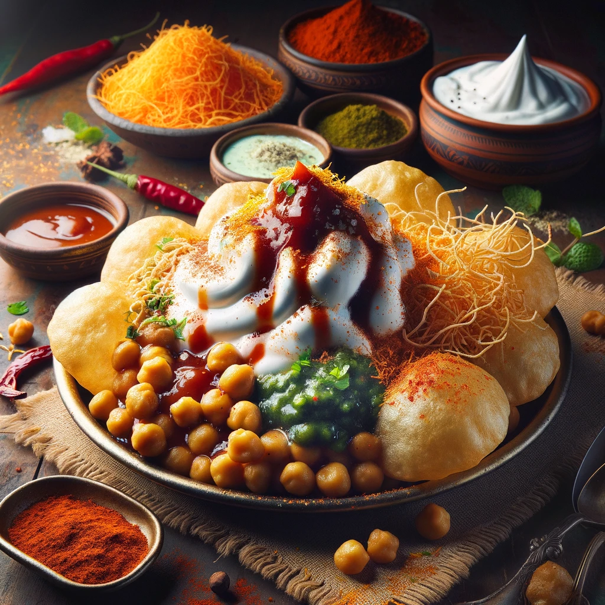

Menu
Dahi Puri - A Perfect Blend of Sweet, Spicy, and Tangy!

Dahi Puri is a popular Indian street food that combines the crunch of puris with the coolness of yogurt and a mix of sweet and spicy chutneys. It's a delightful snack that offers a burst of flavors in every bite.
Ingredients
- Puris (small, round, and hollow)
- Boiled and mashed potatoes
- Boiled chickpeas
- Beaten yogurt (dahi)
- Tamarind chutney
- Mint chutney
- Sev (small fried snack)
- Chaat masala
- Red chili powder
- Finely chopped onions
- Chopped coriander leaves
Steps
- Make a small hole on the top of each puri.
- Stuff the puris with a little bit of mashed potatoes and chickpeas.
- Add a generous amount of beaten yogurt over the puris.
- Drizzle tamarind chutney and mint chutney according to taste.
- Sprinkle chaat masala, red chili powder, chopped onions, and coriander leaves.
- Garnish with sev and serve immediately.